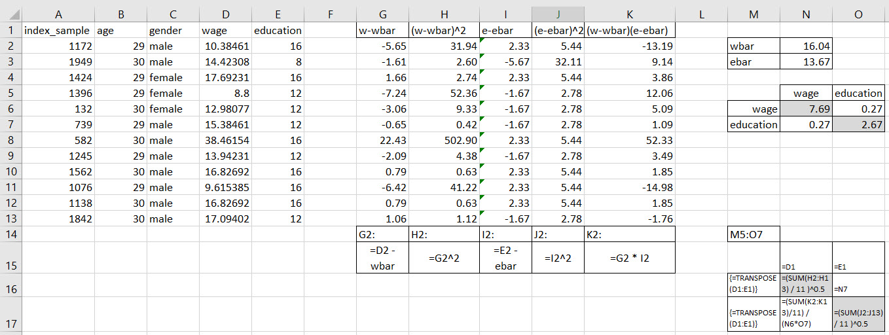
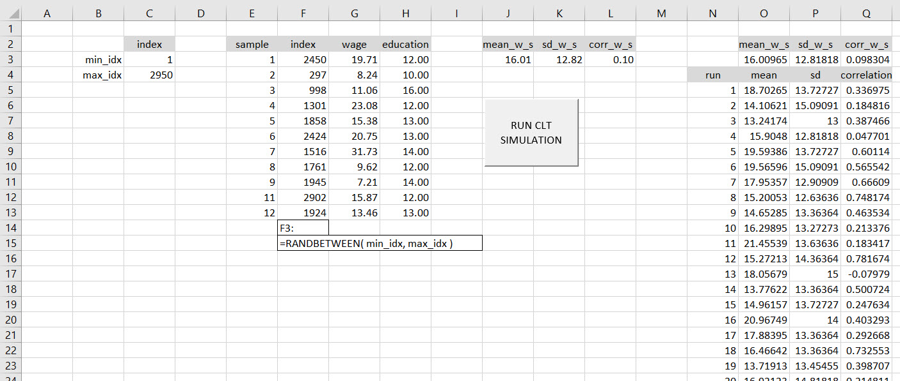
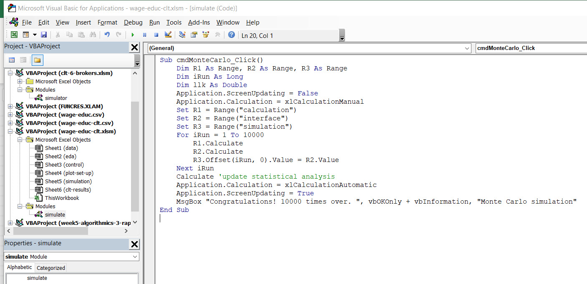
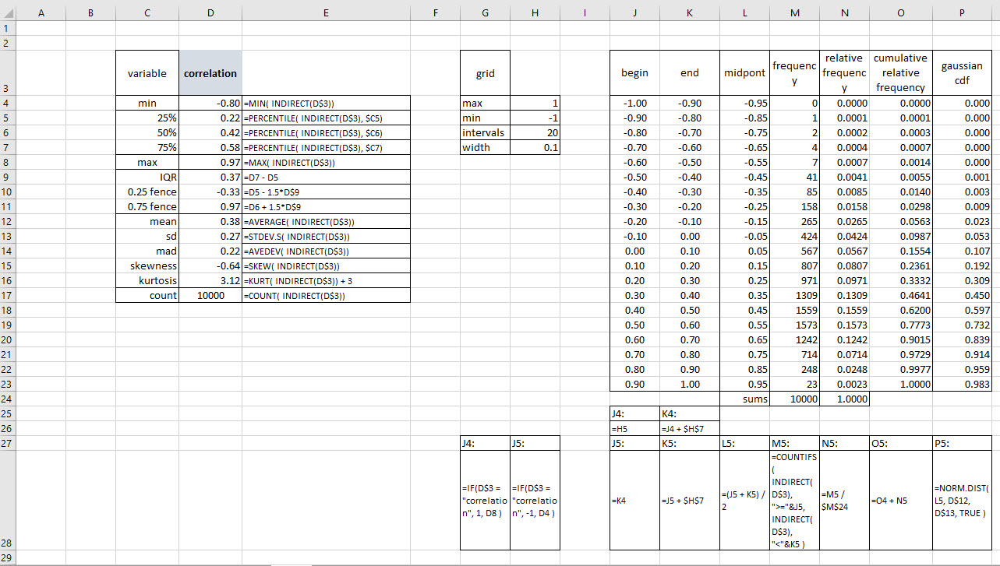
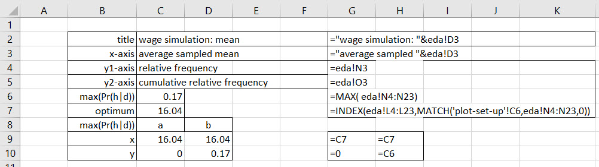
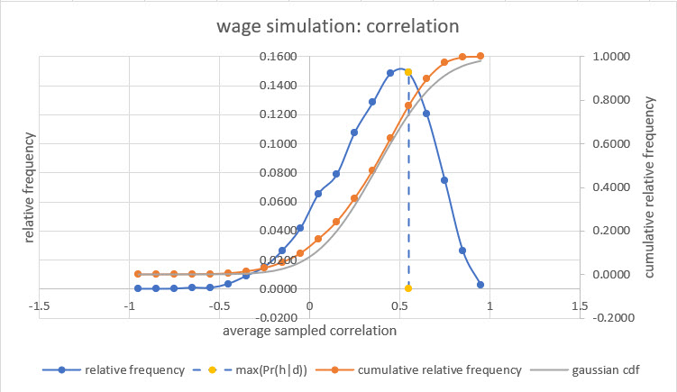
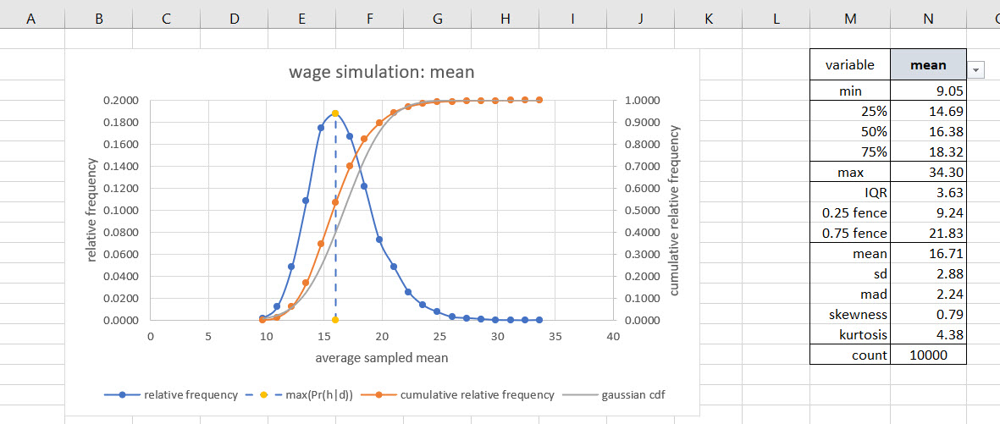
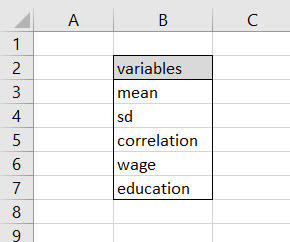

Chapter 7 Gauss’s robots again
7.1 An auspicious result
The Gaussian (also known as the so-called normal distribution) is famous and important because many natural phenomena are thus distributed. Along with heights and weights, we discussed FTE, compound growth, and asset returns all distributed according to this bell shaped curve. Gaussian robots continue their merry quest to describe. Will they help us explain too? We’ll see.
But the Gaussian distribution, is important for another reason: the distributions of means are themselves normally distributed. We demonstrated this idea in our introduction to where the Gaussian distribution can possibly come from: there is was in the calculation of Full Time Equivalent workers in an organization. The FTE calculation involved a sum of hours (randomly sampled) divided by a standard work week number of hours, the constant 40 in that case. These are then the means of hours samples.
The sampling was done with the uniform distribution – nothing very informative at all. In fact we can demonstrate that the population never need be Gaussian distributed for its sampled means to be Gaussian distributed.
7.2 Tale of two populations
Our claim is that we can take any distribution of outcomes, sample repeatedly (with replacement), then sum the samples and divide by the number of sampled outcomes, we will always generate a Gaussian distribution. This claim is known as the Central Limit Theorem. So here’s an acid test. It is the tale of two vastly different populations we splice together. It has two modes, two scales, and two locations. One is skewed, the other is not much so. One has thick tales (do we mean tails?), the other thin.
As advertised we see a two mode distribution. The population mean and standard deviation are \(\mu=55.58\) and \(\sigma=24.69\). If the outcomes are wage rates for two genders, one for each of the two populations, then it appears we see two very different labor markets at work. The CLT will take care of that issue!
Let’s remember our claim. We need to sample repeatedly from the two mode population we just conjured up. Then we calculate the sampled means, standard deviations, also the skewness and kurtosis. We can also calculate median and other quantiles. We will play with these another time.
We will also experiment with multiple sample sizes from this very large population of 100,000 outcomes as well as trial runs of the simulation.
## List of 1
## $ strip.text.y:List of 11
## ..$ family : NULL
## ..$ face : NULL
## ..$ colour : NULL
## ..$ size : num 5
## ..$ hjust : NULL
## ..$ vjust : NULL
## ..$ angle : NULL
## ..$ lineheight : NULL
## ..$ margin : NULL
## ..$ debug : NULL
## ..$ inherit.blank: logi FALSE
## ..- attr(*, "class")= chr [1:2] "element_text" "element"
## - attr(*, "class")= chr [1:2] "theme" "gg"
## - attr(*, "complete")= logi FALSE
## - attr(*, "validate")= logi TRUE
What do we see? First, we need sample sizes and only a relatively few number of trials to move the sampled means away from their original distribution into the Gaussian shape. Second, if our data and hypotheses do not allow for large sample sizes and lots of repetitive sampling, then the CLT will not work its asymptotic magic. This second condition is important because very little data and even fewer experimental runs and trials are the norm for most human decision making. They do work fine in the laboratory where controlled conditions can be met and lots of repetition occur to ensure asymptotic results.
7.3 Education is the key
We ask the question:
Educational attainment levels continue to rise. Will earnings rise too?
To begin to answer this question we sample 120 monthly average years of education along with average USD wages per hour. We then EDA them and boxplot them (two new verbs for us to consider?).
## age gender earnings education
## Min. :29.0 female:4 Min. : 9 Min. :12.0
## 1st Qu.:29.0 male :8 1st Qu.:14 1st Qu.:12.0
## Median :29.5 Median :14 Median :13.0
## Mean :29.5 Mean :16 Mean :13.2
## 3rd Qu.:30.0 3rd Qu.:17 3rd Qu.:13.0
## Max. :30.0 Max. :35 Max. :18.0We can hover over the boxplots of two groups in the data by gender. The hover reveals minimum, maximum, quartiles and Tukey’s fences. There appear to be no female outliers in this sample of data. There is one male outlier, and it is not a lower fence wage rate.
We perform the same visual analysis for the years of education.
This time we note the limits of years of educational attainment for both of the identified genders. The maximum is 16 years, equivalent to 4 years of post-secondary school education for both genders. Males in this sample have an observation at the 8th grade level.
To explore one step further we visualize the potential relationship between wage and education here.
## $title
##
## $subtitle
## [1] "Exploring wages and education"
##
## attr(,"class")
## [1] "labels"Both wages and education are highly skewed with wages to the right and education somewhat to the left. A scatter plot in the lower left hand quadrant shows us some relationship. The correlation calculation is small, but positive.
Here is a calculation table for correlation.

These are the descriptive calculations for mean, standard deviation, and a new measure we will call correlation. The standard deviations are the, get ready, the square root of the average sum of squared deviations of an observation about its arithmetic mean.
The arithmetic sampled mean \(\overline{w}\) for a sample size of \(n=12\) of \(w_i\), for \(i=1 \cdots 12\) observations, sampled from a population is
\[
\begin{align}
\overline{w} &= \frac{\Sigma_{i=1}^n w_i}{n} \\
&= \frac{192.43}{12} \\
&= 16.04
\end{align}
\]
We pronounce \(\overline{w}\) as wbar. And so we have the standard deviation as
$$ \[\begin{align} s_{w} &= \sqrt{ \frac{\Sigma_{i=1}^n (w_i - \overline{w} )^2 }{n-1} } \\ &= \sqrt{ \frac{650.28}{12-1} } \\ &= 7.69 \end{align}\] $$
The sampled standard deviation is \(s_w=7.69\) for this wage, \(w\), sample. Similarly we gather mean, \(\overline{e}=13.67\), and standard deviation \(s_e=2.67\) for education observations \(e\). The standard deviations are arranged as the diagonals of a matrix.
Then there are the diagonals of this matrix which record the relationship, maybe better, association between wage and education, and exactly the same, education and wage. The correlation \(r_{we}\) is a number between -1 and 1 with the interpretation that a perfect, straight-line relationship can be completely negative, -1, or completely positive, +1. There is zero in the middle which registers no relationship at all.
Here is the formula,
\[ \begin{align} r_{we} &= \frac{\Sigma_{i=1}^n (w_i - \overline{w} )(e_i - \overline{e} ) / (n-1) }{s_w \, s_e} \\ &= \frac{5.529}{7.89 \times 2.67} \\ &= 0.27 \end{align} \]
Again we have results as previously advertised and in the pairs scatterplot from above.
7.4 Sample until we drop
Let’s run 10,000 samples each of size 12 from the population of potential wage and education observations. Then let’s calculate the sampled mean, standard deviation of each sample and correlation between education and wage.
The first thing we do is build a simple sampler using Excel’s =RANDBETWEEN() applied to the entire population of wages, education levels, age, and gender.

The maximum and minimum indices of the population data set are used (as named ranges) in the =RANDBETWEEN() function. Visual Basic for Applications (VBA code) directs the drawing of samples, the calculation of sampled means, standard deviations for wage and correlations between wage and education.

The button is a form control found ine Developer ribbon under Insert. The button references the cmdMonteCarlo_click() subroutine. This routine effectively just automates our recalculation of the spreadsheet. Each time we recalculate, say, by pressing function key F9, we deaw a new sample, calculated sampled statistics and record the result. When we click the button, the subroutine takes over function key F9 and produces 10,000 simulation runs by sampling the population 10,000 times 12 observations at a time.
7.5 Results, results, we want results!
In a separate eda worksheet, we can view our handiwork in tables.

Here we have summary statistics and a grid that feeds a table of intervals, midpoints, frequencies, relative frequencies, and cumulative relative frequencies. We may, under some strictures, view the relative frequencies as conditional probabilities of conjectured midpoints, here illustrated with simulated correlations, given the population of data we sampled repeatedly. For emphasis we add a Gaussian interpretation of the conjectured midpoint correlations using the simulated mean and standard deviation from the summary table.
A separate worksheet sets up the plot of the frequency table.

We will use an abline to visually indicate the simulated unobserved parameter with the maximum relative frequency as the \(Pr(h \mid d)\), that is, the probability of conjectured, hypothesized, simulated parameter midpoint given the sampled population of data.
At last here is the correlation plot.

We see something of a bell-shaped body in blue dots. The ogive overshoots but otherwise tracks the simulated cumulative relative frequency. There is an odd bit of a kink around zero simulated correlation. We may need to investigate this further.
Finally, the story of the simulated sampled means unfolds here.
 This plot and accompanying table appear in a separate results worksheet. The consumer of all of this intelligence product can choose a variable from the following list.

Again the simulated sampled means tracks the Gaussian ogive, but does over shoot it. Sampling error we might say? Perhaps. But repeated runs will find that the sampled means will most consistently aggregrate about the mean of the population. The mean is not biased. Standard deviations and correlations will be another story for another day.
7.6 Yet another rocky road we have traveled
We have worked hard and hope, nay, expect that some of this made some modicum of sense. Can we use these ideas to build on our models of data consistency with hypotheses? Yes, we can, and will. We will continue to plumb the depths of the ultimate geocentric model, the Gaussian distribution. Everything we have done here is combletely consistent with a Gaussian observational model.
One of the many reasons this is so mathematically is that the Gaussian model, with its robotic programming, is a quadratic polynomial by nature. Such mathematics describes well any phenomenon and behavior whose deviations from the trend are symmetric and concentrate in that quadratic peak we just glimpsed around the dashed lines in the plot.